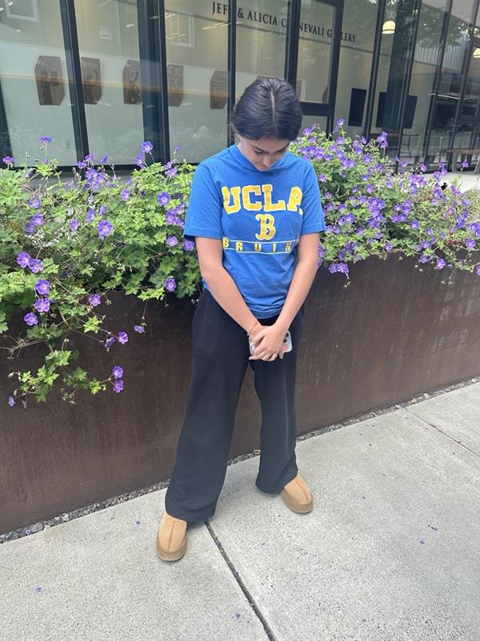

I love colors a lot, just like how I love shivali >:)
and SINCE I LOVE SHIVALI SO MUCH, I decided to EXPOSE her.
In my color scheme, I am trying to represent feelings of nature, passitivty, and calmness, which are represented by the blue and green color on the webiste. I also wanted to touch on themes of playfullness and warmth with the skin tone color when you hover over the nav bar. This is because this picture was taken outside, where plants cascade around my friend Shivali, showing nature and the values of my friend at the same time. The color scheme itself is somewhat triadic, as it pulls from blue (hence the blue background), the yellow (which mixes with blue to make green), and a warm reddish-brown (which represents the red side).